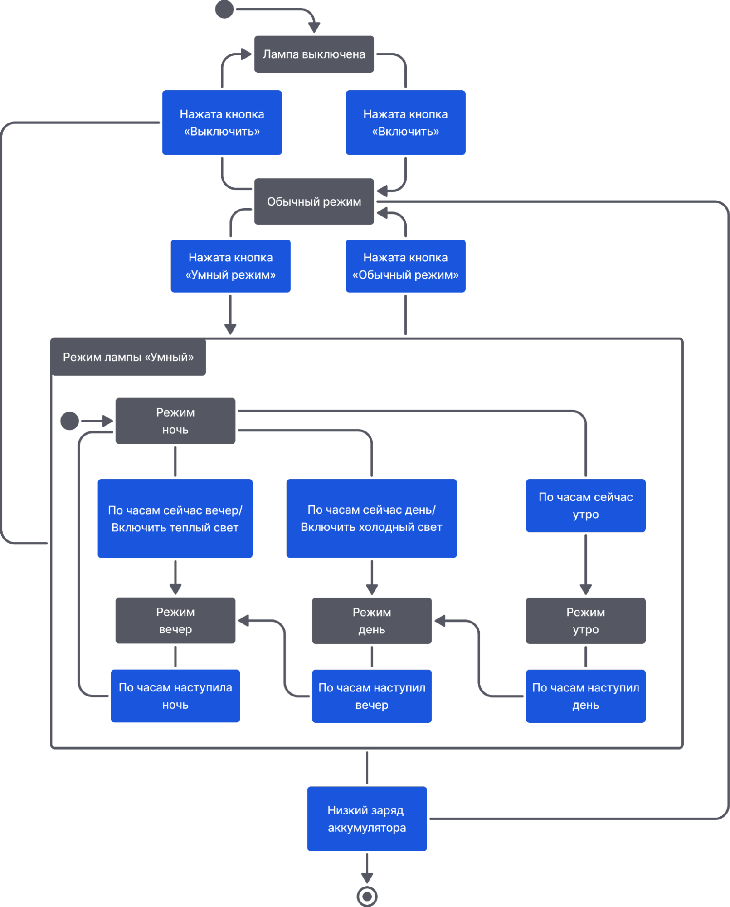
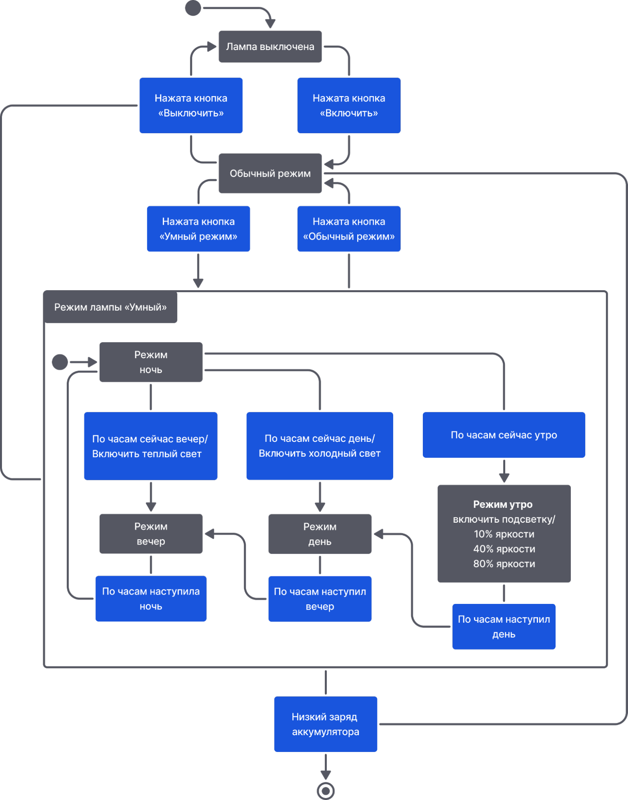

А как описывать поведение исполнителя для самого состояния, а не только на переходах?
Рассмотрим ещё раз, что такое события. Это некоторое внешнее воздействие, которое требует нашей реакции. До этого мы рассматривали изменение состояния. Но что, если состояние менять не нужно, а надо всего лишь что-то сделать?
Например, лампа переходит в режим «Утро», подсветка начинается с минимального значения яркости и постепенно доходит до максимального. Конечно, можно создать отдельное состояние для процесса изменения значения яркости, но иногда проще обойтись без этого.
На этот случай существуют внутренние события, которые не приводят к переходу в новое состояние и сопровождаются действиями. Таким образом можно описывать, что делает исполнитель в том или ином состоянии, например, по-разному реагирует на одно и то же событие.
Как до этого упоминалось, на событие может приходиться сразу несколько действий. Они будут выполняться по очереди, как в алгоритме. Здесь даже и вовсе может быть отрывок кода на языке программирования, чем пользуются на практике.
Важно заметить, существуют специальные внутренние события: entry (англ. вход, у нас – onEnter) – это событие, которое вызывается при входе в состояние, и exit (англ. выход, у нас – onExit) – соответственно, вызывается, когда исполнитель выходит из этого состояния в другое. Чаще всего используется entry, чтобы описать, как именно исполнитель должен проделывать действия, соответствующие его состоянию.
Например, вместо того, чтобы писать «яркость 10%» для каждого перехода в состояние режим «Утро», это действие можно поместить в событие entry. А в событие exit – «яркость 90%». Это гораздо удобнее и проще, а также позволяет убрать лишние повторы.
